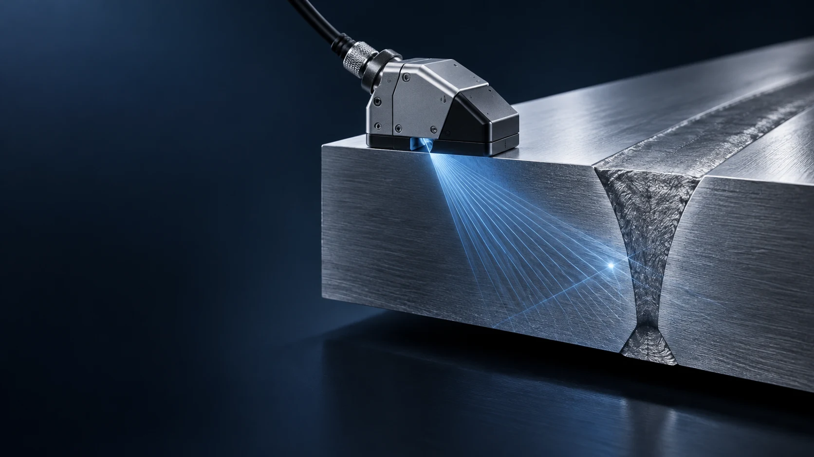

신호를 읽고,
판단의 근거를 남기다.
위상배열 초음파 검사
시각화와 라벨링 작업 공간

하나의 신호를 여러 관점에서 확인하고,
검토한 위치와 라벨을 명시적으로 저장합니다.
같은 신호.
서로 다른 관점.
A/B/C/S 스캔을 연결해 파형과 단면, 평면과 각도 정보를 함께 살펴봅니다. 한 화면에서 본 지시를 다른 관점의 맥락으로 확인합니다.
A closer look
파형에서 시작하는 확인
선택한 위치의 진폭 변화를 파형으로 살펴봅니다. 시간 또는 음로 축의 신호를 다른 스캔의 위치 정보와 연결해 읽습니다.
A-scan · 파형 관점이 도해는 관점의 차이를 설명합니다.
실제 검사값이나 제품 화면을 재현하지 않습니다.
다른 형식에서,
하나의 검토 흐름으로.
다섯 입력 계열을 같은 작업 공간에서 살펴봅니다. 형식 버전과 원본 메타데이터에 따라 호환 범위가 달라집니다.
- NDE검사 데이터
- UVDATA검사 데이터
- CIVA프로젝트 디렉터리
- OPD검사 데이터
- ODAT검사 데이터
모든 제조사 변형과 버전을 검증했다는 의미는 아닙니다.
Source stays source
더 선명하게 보되,
원본은 그대로.
표시 Gain은 화면의 팔레트 스케일을 조정합니다. 원본 샘플과 측정값은 바꾸지 않습니다.
3D 좌표의 의미까지 함께 읽습니다.
- Physical물리 좌표
- 물리 공간의 위치 관계를 살펴봅니다. 치수 측정의 교정이나 인증을 보장하지 않습니다.
- Unfolded전개 표현
- 전개된 관점에서 데이터를 읽습니다. 실제 물리 XYZ 좌표와 같지 않습니다.
- Native P/L/S원본 인덱스
- 원본 데이터의 P/L/S 인덱스 공간을 유지해 위치를 확인합니다.
판단은 사람이.
근거는 작업 안에.
파일을 고르는 순간부터 라벨을 저장할 때까지,
검토자의 명시적인 선택이 흐름을 이어갑니다.
-
파일별로 검토할 대상을 정리합니다.
파일별 작업 목록과 확장자 필터로 검토 대상을 좁히고, 리포트와 연결된 검토 흐름에서 검사 파일을 살펴봅니다.
-
한 파일의 여러 라벨을 확인합니다.
연결된 스캔과 원본 위치를 살피며 여러 라벨을 검토합니다. 후보를 본다는 것과 라벨로 확정한다는 것을 구분합니다.
-
확인한 수정만 명시적으로 남깁니다.
Add/Update와 저장을 통해 라벨 편집을 반영합니다. 검토자의 확인 없이 AI 후보가 자동으로 라벨에 저장되지 않습니다.
후보를 살피는 보조 수단.
판정을 대신하지 않습니다.
선택적인 AI 보조는 후보 탐색을 돕습니다. 별도의 모델과 런타임 구성이 필요하며, 결과와 라벨은 반드시 작업자가 검증해야 합니다.
상대 진폭은 결함 확률이 아닙니다. AI 결과는 합격·불합격 판정이나 교정된 결함 치수를 의미하지 않습니다.
도입 전에 확인할 것.
기능의 범위와 사용 조건을 명확하게.
어디에서 실행하나요?
PAUT AI는 Windows용 검사 데이터 시각화·라벨링 작업 공간입니다. 이 웹사이트는 제품 소개용 정적 페이지이며, 브라우저에서 검사 파일을 업로드하거나 분석하는 서비스가 아닙니다.
형식·좌표의 사용 범위는?
NDE, UVDATA, CIVA 프로젝트 디렉터리, OPD, ODAT 계열을 지원합니다. 호환성은 파일 버전과 원본 메타데이터에 따라 달라집니다. Physical, Unfolded, native P/L/S는 서로 다른 표현이며, 전개 좌표와 원본 인덱스를 물리 XYZ나 교정된 치수로 해석하면 안 됩니다.
AI 사용에 무엇이 필요한가요?
연구용 AI 보조에는 별도의 모델·런타임 설정과 사용 동의가 필요합니다. 모델 가중치가 기본으로 제공된다는 의미가 아니며, 검증된 정확도나 자동 합격 판정을 보장하지 않습니다. 작업자가 결과를 검증하고 라벨을 명시적으로 저장해야 합니다.
이미지는 실제 화면인가요?
아닙니다. 탐촉자 이미지와 스캔 도해는 검사 원리와 관점을 설명하는 개념 일러스트입니다. 실제 제품 화면, 검사 데이터, 결함의 크기 또는 측정 성능을 보여주는 자료가 아닙니다.